一、AppL 概述
应用软件层（AppL, Application Layer）位于 AutoSAR 架构的最上层，是实现具体车辆功能的地方。本章内容对应 AutoSAR 分层架构中最上面的蓝色区域。
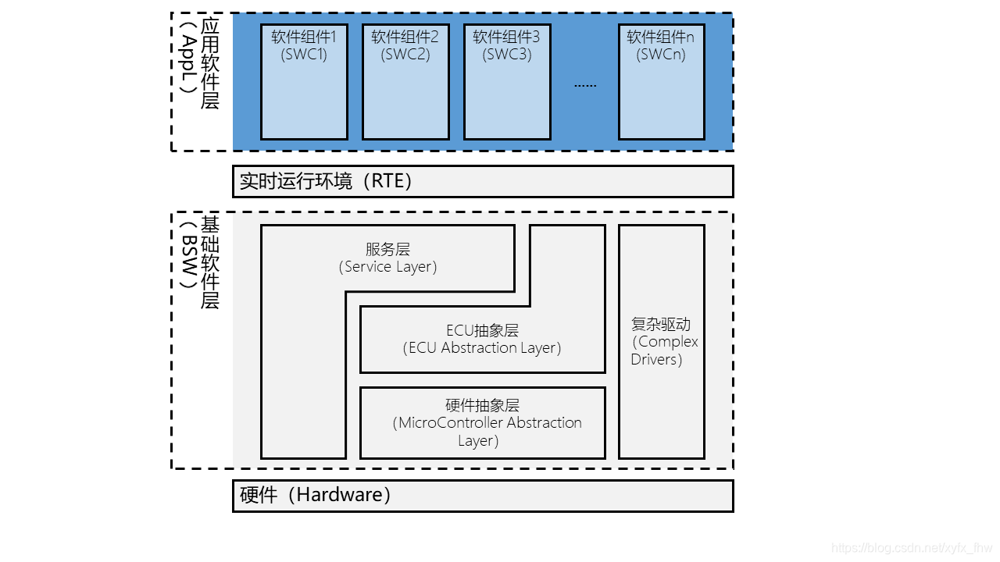
1.1 AppL 的组成
AppL 中最重要的就是软件组件（SWC），而 SWC 与其他 SWC 通信需要接口，每个 SWC 内部又由可运行实体（Runnable）组成。因此 AppL 主要由三部分构成：
1. 应用软件组件（SWC）：实现特定功能的软件模块；
2. AutoSAR 接口（Ports）和连接器（Connector）：SWC 之间或 SWC 与 BSW 之间的通信接口；
3. 可运行实体（Runnable）：SWC 内部真正执行功能的函数。
1.2 实例：汽车顶灯控制
以"汽车顶灯控制"为例理解 AppL 的工作方式。车内顶灯一般有三种模式：
1. 常闭模式 2. 常开模式 3. 随车开关而开关的模式（开门亮、关门灭）。
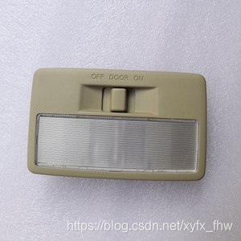
将这个功能拆解为 SWC：左右车门开关各对应一个传感器 SWC，车灯开关对应一个传感器 SWC；车门开关信号汇总到车门开关逻辑 SWC；调光控制器 SWC 综合车门逻辑与车灯开关信号进行决策；最终由左右两个执行器 SWC 驱动顶灯。

1.3 SWC 的通信
SWC 之间的通信分为两种情形：
片内通信（同一 ECU 内）：通过 RTE 以全局变量方式传递数据，RTE 负责管理数据的读写，避免多个 SWC 同时访问同一数据时出错。
片外通信（跨 ECU）：通过虚拟功能总线（VFB, Virtual Function Bus）进行，底层实际走 CAN Bus 等真实总线。对 SWC 而言，无论对方在本 ECU 还是其他 ECU，通信方式完全一致，位置透明。
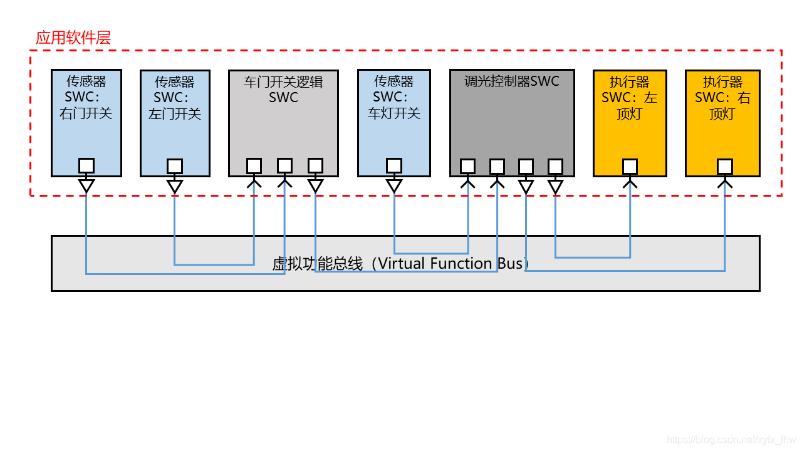
1.4 SWC 的分配
一个完整功能往往需要多个 SWC 协作，这些 SWC 会被拆分部署到不同的 ECU 中——实际汽车也是这样做的。例如顶灯控制功能中：车门相关的 3 个 SWC 分配到车门 ECU，车灯开关、调光控制与顶灯执行器等 4 个 SWC 分配到车顶灯 ECU，两个 ECU 之间通过总线（Bus）交换信号。
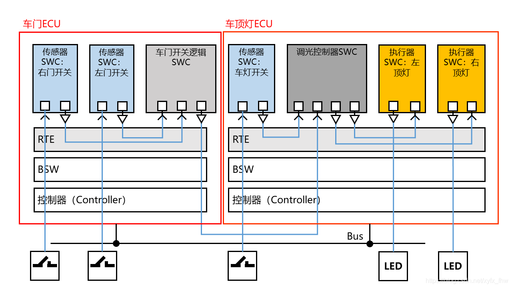
二、SWC 的类型
2.1 原子级 SWC（Atomic SWC）
原子级 SWC 是不可再拆分的 SWC，其特点是对应一个 .c 文件，这个 c 文件就是最小单元。有人会问：Runnable 不是比 SWC 更小的单元吗？确实如此，但二者密不可分——把 SWC 看成原子，Runnable 就是其中的电子、质子和中子。因此 SWC 是最小单元，Runnable 是其中的函数，每个 SWC 基本用来实现一个特定的算法。
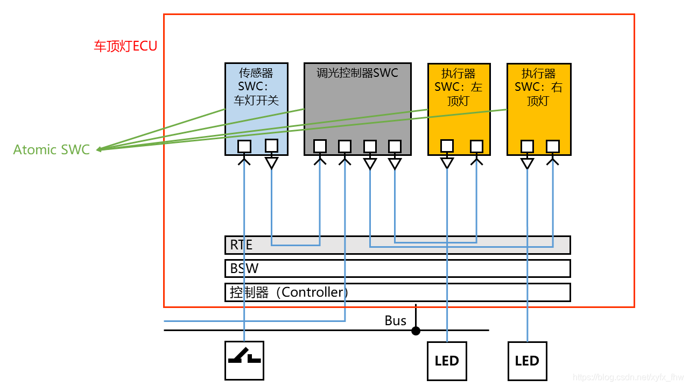
2.2 集合级 SWC（Composition SWC）
有不可分割的 SWC，就有可分割的 SWC。AutoSAR 规定了集合级 SWC（Composition SWC），它由若干 Atomic SWC 组合而成，就像"分子由很多原子组成"。Composition 本身不实现具体算法，仅用于组织结构、方便管理；内部 SWC 之间的连接线称为连接器（Connector）。
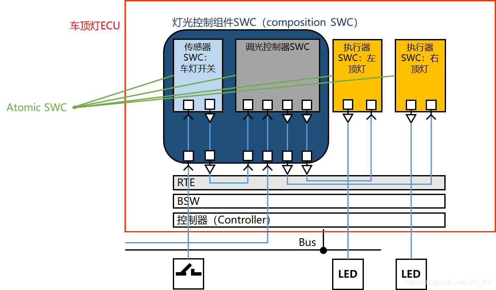
引入 Composition 后，工程文件映射也会发生变化：Composition 会在工程目录中生成对应的文件夹，内部各 Atomic SWC 的 .c/.h 文件归拢其中，而未被组合的 SWC 仍直接位于 1_AppL 目录下。
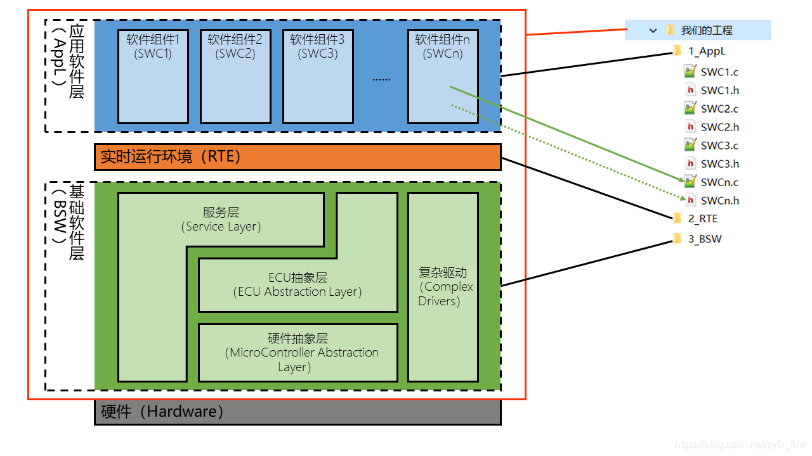
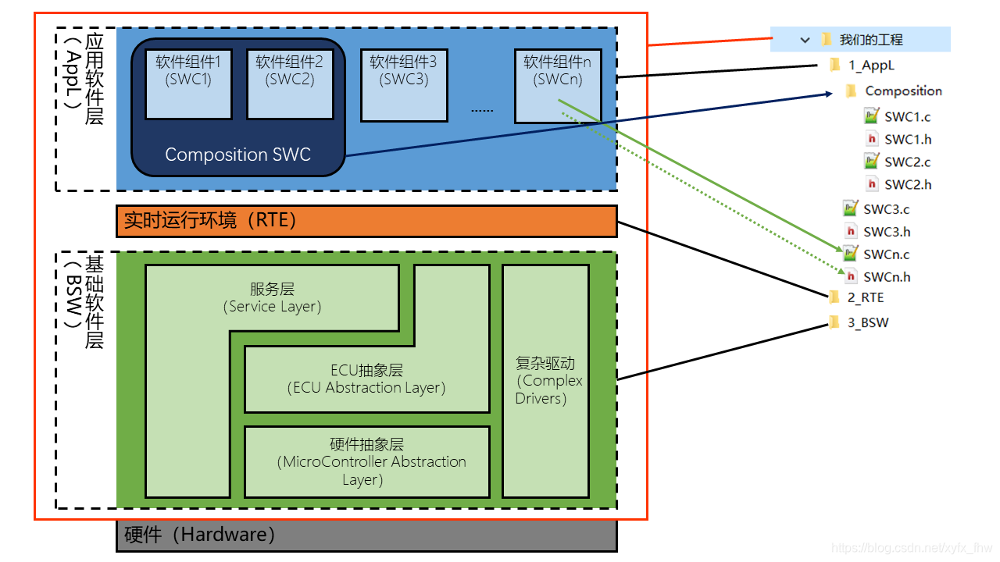
2.3 特殊的 SWC
有两个特殊的"SWC"需要说明：IoHwAb（IO 硬件抽象层）和 Cdd（复杂驱动）。严格来说它们属于 BSW 而非 AppL，但在 DaVinci Developer 中同样可以像 SWC 一样进行配置、添加 Runnable 等操作，因此也可把它们看作特殊的 SWC。传感器/执行器类的 SWC 往往需要通过它们与硬件打交道。
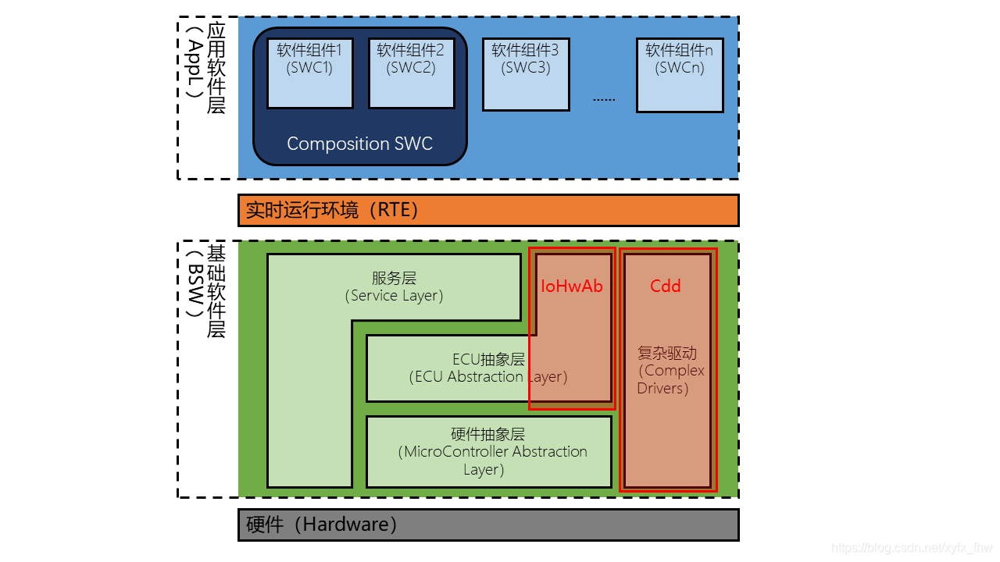
三、Ports 接口类型
3.1 接口的分类
Ports 是 SWC 与 SWC 之间、或 SWC 通过 RTE 与 BSW 之间进行接口（Interface）通信的通道。Ports 主要分为 5 种类型，又可按两个维度归类：
按方向分：R-Ports（需求接口，接收/调用方）、P-Ports（提供接口，发送/服务方）、PR-Ports（需求且提供接口，仅 AutoSAR 4 中定义）。
按用途分：Send/Receiver（S/R）接口——用来传输数据；Client/Server（C/S）接口——用来执行操作。
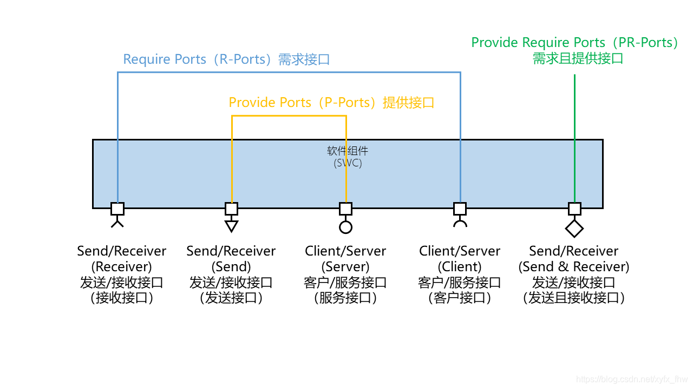
在代码层面，SWC 不直接访问对方，而是调用 RTE 生成的标准 API。RTE API 的命名遵循统一格式：RTE_动作_<端口名>_<对象名>(...)。下面结合顶灯实例，对每种端口类型的接口定义格式逐一说明。
3.2 S/R 接口（Sender/Receiver）
作用：传输数据。通过 RTE 传输并管理数据，避免同时调用同一数据时出错。发送方的 Send 口与接收方的 Receive 口对接，支持 1:1 及 1:n（一个发送多个接收）的通信方式，例如顶灯例子中"车门开关"信号可同时发给多个使用方。

① S/R 发送接口（Send，属 P-Port）——发送方通过 RTE_Write 把数据写入 RTE，由 RTE 分发给所有接收方：
| 字段 | 说明 |
|---|---|
status | 返回值，类型为 Std_ReturnType：E_OK（0）表示发送成功，E_NOT_OK（1）表示失败，可用于错误判断 |
RTE_Write | RTE 的"写数据"API 前缀，专用于 S/R 接口的发送方 |
<P> | 端口名（Port Name），在 DaVinci 中配置端口时自定义，举例中为 DoorSwt |
<D> | 数据元素名（Data Element），即该端口上传输的数据名，举例中为 DoorOpen |
(DoorOpen) | 实际要发送的数据值（实参），类型由接口中定义的数据元素决定 |
② S/R 接收接口（Receiver，属 R-Port）——接收方通过 RTE_Read 从 RTE 读取最新数据：
| 字段 | 说明 |
|---|---|
status | 返回值：E_OK 表示读到有效数据，E_NOT_OK 表示读取失败 |
RTE_Read | RTE 的"读数据"API 前缀，专用于 S/R 接口的接收方 |
<P> / <D> | 端口名与数据元素名，须与发送方配置的接口（Interface）一致，RTE 才能正确配对 |
(&doorState) | 传入变量的地址，RTE 将读到的数据写入该变量（出参方式返回） |
③ S/R 发送且接收接口（Send & Receiver，属 PR-Port）——同一端口既可发又可收，同时具备上述两组 API：
PR-Ports 仅在 AutoSAR 4 中定义，适用于一个 SWC 既要发布自身状态、又要订阅同类反馈信号的场景（如多个灯光节点互相同步状态）。
3.3 C/S 接口（Client/Server）
作用：执行操作。Client 调用 Server 提供的函数（Operation），Server 执行后返回结果。调用方式分同步（Client 等待 Server 执行完毕再继续）和异步（Client 发出调用后先执行自身逻辑，稍后再取结果）两种；支持 ECU 内部及跨 ECU 调用，一个 Server 可服务多个 Client（1:n）。
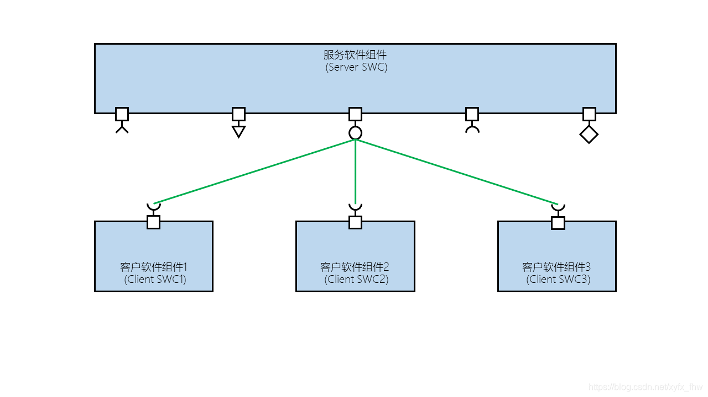
① C/S 客户接口（Client，属 R-Port）——客户方通过 RTE_Call 调用服务方的操作函数：
| 字段 | 说明 |
|---|---|
status | 返回值：同步调用时同时携带服务执行结果；异步调用时仅表示"请求是否发出" |
RTE_Call | RTE 的"调用操作"API 前缀，专用于 C/S 接口的客户方 |
<P> | 端口名，举例中为 DimmingSrv（调光服务端口） |
<O> | 操作名（Operation），即要调用的服务函数名，举例中为 SetBrightness |
(brightness) | 传给服务操作的实参，个数与类型由 C/S 接口中该 Operation 的签名决定 |
若为异步调用，Client 发出 RTE_Call 后立即返回，稍后再通过 status = RTE_Result_<P>_<O>(&result); 取回执行结果，避免长时间阻塞等待。
② C/S 服务接口（Server，属 P-Port）——服务方不调用 API，而是按接口约定实现对应的 Operation 函数（即一个 Runnable），由 RTE 在收到 Client 请求时自动路由调用：
对客户方而言，无需关心该函数跑在哪个 ECU：同 ECU 时 RTE 直接映射为函数调用，跨 ECU 时 RTE 自动经 COM 栈走总线收发，调用格式完全不变——这正是 AutoSAR "位置透明"的体现。
四、Runnables 可运行实体
4.1 Runnable 概述
Runnable 就是 SWC 中的函数。AutoSAR 架构由 DaVinci 软件生成时，Runnable 是空函数，需要手动添加代码实现实际功能。一个 SWC 至少包含一个 Runnable，且 Runnable 必须挂载到某个 OS Task 上才会被执行——就像函数放着不被调用就不会起作用一样。
Runnable 可以被多种方式触发：定时器周期触发（如每 100ms 一次）、操作调用触发（被 C/S 接口调用）、数据接收触发（收到某数据时执行）等。
4.2 工程实际映射
Runnable 与实际工程的映射关系：每个 SWC 对应一对 .c/.h 文件，Runnable 就是 .c 文件中的函数。例如 SWCn.c 中的 Runnable1 每 100ms 触发一次，函数体内通过 status = RTE_Write_<P>_<D>(DoorOpen); 这样的 RTE API 发送数据（即上一节讲的 Send 接口），数据由 RTE 统一管理。

需要注意：SWCn.c 文件中并未包含 BSW 的头文件，通过这种方式将 AppL 与 BSW 隔离开。虽然加入必要的 .h 文件后也可以直接调用 BSW 中的函数，但这会破坏分层架构，不建议这么做。另外，Runnable 中应尽量使用 RTE 提供的 API 进行通信，而不是直接访问全局变量，以保证数据一致性与架构规范。